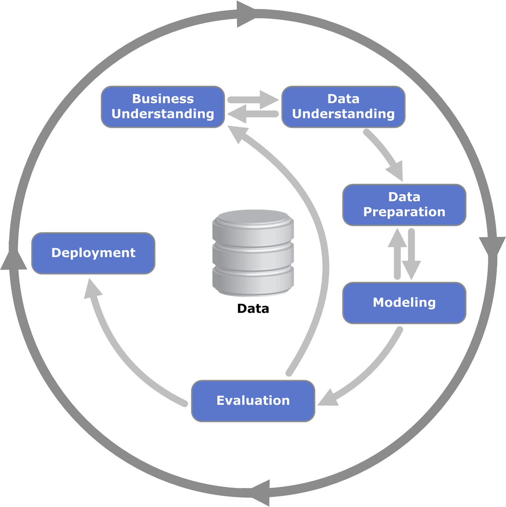

Aplicações de Ciência de Dados
Introdução
Este livro apresenta aplicações práticas de ciência de dados inspiradas em casos reais, vistas sob a ótica de negócios. Em cada capítulo, partimos de um problema que uma empresa poderia enfrentar (prever a falha de uma máquina, precificar um imóvel, entender o perfil dos clientes, definir ações de venda cruzada) e mostramos, passo a passo, como os dados podem ajudar a resolvê-lo.
O foco não está em apresentar uma técnica isolada, mas em mostrar como ela se encaixa em um projeto de ponta a ponta: da pergunta de negócio até o uso prático dos resultados.
[Última atualização: 04/11/2026.]
O processo que guia as análises: CRISP-DM
Projetos de ciência de dados bem-sucedidos raramente começam pelo algoritmo. Para organizar o trabalho, usamos ao longo do livro o CRISP-DM (Cross-Industry Standard Process for Data Mining), um processo criado no fim da década de 1990 por um consórcio de empresas e instituições europeias e que se tornou um dos referenciais mais usados em projetos de análise de dados (Chapman et al. 2000; Wirth e Hipp 2000). Ele é neutro em relação a setor, ferramenta e técnica, o que o torna adequado para casos tão distintos quanto os deste livro.
O CRISP-DM divide um projeto em seis fases:
- Entendimento do negócio (business understanding): definir o problema, os objetivos e os critérios de sucesso do ponto de vista do negócio, antes de olhar para os dados.
- Entendimento dos dados (data understanding): coletar os dados disponíveis, descrevê-los, explorá-los e avaliar sua qualidade.
- Preparação dos dados (data preparation): selecionar, limpar, transformar e integrar os dados, até chegar à base que será usada na modelagem.
- Modelagem (modeling): escolher e aplicar técnicas estatísticas ou de aprendizado de máquina, ajustando seus parâmetros.
- Avaliação (evaluation): verificar se os resultados são consistentes e, principalmente, se respondem ao objetivo de negócio definido no início.
- Implantação (deployment): colocar os resultados em uso (um relatório, uma regra de decisão, um modelo em produção) e planejar seu monitoramento e manutenção.

Como mostra o diagrama (Figura 1), o processo não é uma sequência rígida. As setas indicam as dependências mais frequentes entre as fases, mas é comum voltar atrás: uma avaliação ruim pode levar a uma nova preparação dos dados, e o entendimento dos dados pode obrigar a rever o problema de negócio. O círculo externo lembra que o trabalho continua depois da implantação, pois os modelos precisam ser monitorados e atualizados.
Sempre que possível, os capítulos seguem a lógica do CRISP-DM: começam pelo problema de negócio, passam pela exploração e preparação dos dados, apresentam a modelagem e a avaliação e terminam discutindo o uso prático e as limitações dos resultados. Nem todos os capítulos enfatizam todas as fases. Em alguns, o destaque é a exploração dos dados, em outros a modelagem ou a interpretação dos resultados para o negócio.
O que você vai encontrar
Os capítulos são estudos de caso inspirados em situações reais. Eles usam bases de dados públicas ou simuladas, e cada capítulo indica a origem dos dados e suas limitações. Os resultados, portanto, ilustram o uso das técnicas e não devem ser tomados como conclusões sobre os mercados ou setores retratados.
Código em R e em Python
Todas as análises são acompanhadas do código completo, que pode ser copiado e executado. Ele aparece ora em R, ora em Python, justamente para mostrar como os mesmos conceitos e etapas do processo se aplicam nas duas linguagens, que são as mais usadas em ciência de dados. A escolha em cada capítulo busca apenas variar os exemplos. As técnicas apresentadas podem ser reproduzidas em qualquer uma das duas.
Este material não é um curso de programação. Alguma familiaridade com R ou Python ajuda a acompanhar o código, mas a narrativa de cada capítulo foi escrita para ser compreendida também por quem quer focar no raciocínio analítico e nas decisões de negócio.
Dados e códigos
Os códigos-fonte deste livro estão disponíveis no repositório do projeto no GitHub, e as bases de dados utilizadas nos capítulos estão reunidas nesta pasta pública.
Para reproduzir as análises, baixe os arquivos da pasta e salve-os em um diretório chamado data, no mesmo local em que estiver o código. Os códigos leem os arquivos a partir desse diretório (por exemplo, data/sao-paulo-properties-april-2019.csv).